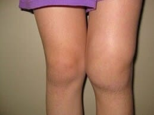
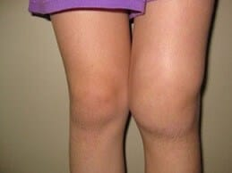

"Amikor az ízületek nem hagynak élni, nincs más hátra, mint reménykedni a csodában" - Exkluzív interjú egy legendás férfival!
Ma egy különleges vendéget fogadunk stúdiónkban, a legendás szakértőt, Gyáfrás Pétert.
- Szia Péter! Kérem, mondjon valamit magáról.
Pesten születtem és nőttem fel. 1975-ben diplomáztam. Az egyetemen ismerkedtem meg leendő feleségemmel, Laurával. 2009-ig ortopéd sebészként dolgoztam.

- Ez érdekes. De mi történt 2009-ben, és miért hagyta ott a munkát?
2007-ben Lauránál térdízületi osteoarthritist diagnosztizáltak. Be kell vallanom, hogy ez egy fordulópont volt az életünkben, bár akkor mindez még egyfajta elviselhetetlen megpróbáltatásnak tűnt számunkra. Két év alatt mindent kipróbáltunk: gyógytornát , a fizika megerőtetés teljes kiiktatását, vitamin komplexeket (kondroitin, glükózamin, MSM és mások), géleket, kenőcsöket. Minden hiábavaló volt. Semmi sem segített, kétségbeestünk. Nem hittem el, hogy az orvosi végzettségemmel nem tudok segíteni a feleségemnek. Nagyon kiábrándultam az egészségügyi rendszerünkből: tényleg nincs mód arra, hogy az emberek hosszú és boldog életet éljenek? Ezért belekezdtem egy saját kutatásba
 
— Milyen kutatás? Megtudhatunk erről többet is?
Amikor rájössz, hogy pár éven belül a feleséged már nem fog többé tudni járni, mindent megteszel, hogy elébe menj ennek. Én pedig elkezdtem kutatni. Tanulmányoztam mindent, ami közvetve vagy közvetlenül összefügg az ízületi betegségekkel. Élettani tanulmányokat folytattam a pszichoszomatika, a biokémia területén, és még sok más területen. Szinte az összes pénzemet arra költöttem, hogy Ázsia legjobb orvosainál tanulhassak, akik biztosan többet tudnak az ízületi fájdalmakról, mint a nyugati orvosok
2009 decemberében össze tudtam foglalni mindazt a tudásomat, amit addig felhalmoztam. És rájöttem, hogy bizonyos összetevők kombinálásával olyan hatékony gyógymódot kaphatok, amely végleg megszabadítja az embert az ízületi fájdalmaktól. Ekkor azonban meglepetés ért: nálunk nem kaphatók a szükséges alapanyagok. Hitelt vettem fel és Ázsiából megrendeltem őket. Egy hónappal később megérkeztek a szükséges alapanyagok, de itt újabb meglepetésben volt részem : senki nem akarta legyártani azt a terméket, amire szükségem volt. Még jó, hogy voltak barátaim, akik segítettek. 3 hét után megkaptam a formulát, amit azonnal teszteltünk Laurával.
Uram Isten! A hetedik mennyországban éreztem magam a boldogságtól!
— Miért? 'Mi történt?'
Laura napról napra jobban volt. 7 napos kezelés után már el tudott menni vásárolni, és amikor élelmiszert vásárolt, megjelent az arcán a mosoly, ami már úgy hiányzott. Újabb 2 hét után , az arthrosis teljesen eltűnt! Nem hittem a szememnek, de a vizsgálatok azt mutatták, hogy Laura teljesen egészséges. Hihetetlenül boldog voltam. Igazi győzelem volt!

- Igazi hős, példakép sok ember számára hazánkban! De mi történt ezután?
Először csak élveztük az életet, annak minden pillanatát, Laura életet adott gyönyörű lányunknak, ezzel is megköszönve az érte való harcomat, ugyanis azt tudni kell, hogy a terhesség nagyban befolyásolja az ízületek állapotát.

Egy este Laura megkérdezte, hogy Magyarországon sokan szenvednek-e ízületi betegségekben? Tanulmányoztuk a statisztikákat, és rájöttünk, hogy ez sajnos egy elég gyakori probléma. Magyarországon több mint 1 millió ember szenved különböző ízületi betegségektől, és nagy fájdalmaik vannak. Aztán feltett egy kérdést, ami örökre megváltoztatta az életemet: 'Tudnál-e segíteni másokon is ugyanúgy, mint rajtam? Boldoggá tudod őket is tenni?'. Még egyszer belészerettem, pont mint az első alkalommal. Ez a nő a legjobb dolog, ami valaha történt velem. Egyetértettem vele. Körülbelül 3 évbe telt a formula tökéletesítése és a '' nevű termék létrehozása, eza legjobb, amit hazánk lakossága ma vásárolhat.

— Ez nagyon biztatóan hangzik. Meséljen még nekünk a 'ról'.
Laura és én megtettük azt, amit előttünk még senki. A egy forradalmi gél a következőkön alapul:
- Glükózamin
- Kondroitin
- Arnica
- Mentol
- sok további összetevő
Sajnos ezeknek az alapanyagoknak a nagy részét hazánkban nem forgalmazzák, ezért Ázsiából hozattuk be őket.
Egyedülálló formulájának köszönhetően a bármilyen ízületi betegséget képes meggyógyítani:
- Artritisz (ízületi gyulladás)
- Ízületi kopás
- Coxarthrosis (csípőízület kopása)
- Osteoarthritis
- Osteochondrosis
- Osteochondritis
- Csontritkulás
- Meniszkusz sérülése (porcgyűrű)
- Gonartrosi
- Ez hihetetlen! Te korunk igazi feltalálója vagy. Hogyan sikerült ez neked?
Ne felejtsük el, hogy sok év fáradságos munkája kellett hozzá. Jövőre ünnepeljük ennek a munkának a tizedik évfordulóját. Ma már 17 934 ember kezdhetett új életet ennek köszönhetően.< /b>.
Tudja, Laurával nem akartunk ezzel pénzt keresni. Csak segíteni akartunk az embereknek! Egyébként minden hónapban tartunk sorsolást értékes nyereményekkel azoknak, akik a termékeinket használják:
- Hol kapható a ?
Sajnos gyógyszertárakban nem lehet megvásárolni. Csak nagy gyógyszergyártó cégek gyógyszereit
árulják, amik legjobb esetben egyszerűen nem segítenek, rosszabb esetben pedig akár árthatnak is, ugyanis súlyos
mellékhatásokat okozhatnak.
Van egy hivatalos webhelyünk, ahol megrendelhető
az eredeti . .
— Mit kívánna olvasóinknak búcsúzóul?
Nem rég Laurával úgy döntöttünk, hogy egy időre 50%-kal csökkentjük a '' árát. Most
mindenki élhet ezzel a különleges ajánlattal
az utolsó napot is beleértve! Ilyen alacsony áron nem fogja tudni beszerezni a 'ot' az
akció keretein kívül.
Jó egészséget kívánok mindenkinek! Az egészségünk a legfontosabb ajándék. Semmi pénz
nem hoz boldogságot, ha az ember nincs jó egészségben.
- Minden jót, barátaim!
Marosi Andrea
Nagyon hálás vagyok Önnek ezért a szerért, Péter. Már régóta keresek magamnak valami hasonlót. 50%-os kedvezménnyel rendeltem meg, nagyon várom a csomagot! Köszönöm!
2021
Almási Marina
Nekem is volt ízületi gyulladásom. De most már nincs... elmúlt a kenőcs használatával! Hálás köszönet ezért!
2021
Nagy Evelin
Velem is ugyanez volt! Ez egy rendkívül hatékony orvosság az ízületi betegségekre! A könyököm és a térdem már nem fáj.
2021
Gara Lilla
Hatalmas köszönet ezért a termékért Önöknek! Nem csak a feleségét mentette meg, de még sok más embert. Nemrég én is kipróbáltam a ot a gerinc nxaki részén, osteochondrosisom van, most viszont sokkal jobban érzem magam. Remélem, hogy idővel még jobb lesz!
2021
Gyáfrás Péter
Lilla, ne aggódjon, és továbbra is használja az Hongrostrongot. A legfontosabb dolog csak az, hogy kövesse a készítmény használatára vonatkozó
A legjobbakat kívánom: Péter
2021
Megyeri Sándor
Emberek, segítsetek! Annyira belefáradtam már, hogy folyton fáj a hátam! A kényelmetlenség és a fájdalom nem hagy élni. Egyszerűen már nem tudom, mit tegyek. Különféle tablettákat szedek, időnként mindenféle gélt használok a fájó területeken, de semmi sem segít :(
2021
Baros Attila
Sándor, rendelje meg a ot, nem fogja megbánni. Nekem is ugyanez volt a problémám, a fájó ízületek miatt még járni sem tudtam. Édesanyámnak köszönhetően rátaláltam erre a kenőcsre, ő tanácsolta, hogy használjam. Egyébként hat hónapja vettük, kedvezmény nélkül (bár az ára nem volt magas). Most már nincs gondom az ízületeimmel, könnyen mozgok. Bízzon bennem, vegye meg és minden rendben lesz, meglátja, főleg, hogy most 50% kedvezménnyel hozzá lehet jutni, tényleg nincs vesztenivalója.
2021
Pálosi Klára
Hogyan lehet megrendelni a ot?
2021
Rácz Viktor
Klára, itt a link a hivatalos oldalra, csak azt javaslom, siess, ha szeretnél élni a különleges ajánlattal, 50% kedvezménnyel is beszerezheted. Ez a kenőcs nagyon sokat segített nekem.
2021
Pálosi Klára
Viktor, köszönöm szépen, már meg is rendeltem. Hány nap alatt szállítják ki?
2021
Rácz Viktor
Klára, kb. 3 nap alatt kihozzák.:)
2021
Toldi Mária
Két hónapja rendeltem meg a nővéremnek, még akció nélkül. Sokáig szenvedett az ízületi gyulladás miatt. Ha tudnák, később hogy hálálkodott, hogy kockáztattam és megrendeltem a ot.
2021
Major Regina
Mária, tényleg ilyen hatékony? Talán nekem is megéri rendelni, végülis úgy is 50% kedvezménnyel meg lehet most kapni.
2021
Béres Vince
Én is hallottam már erről a termékről. Néhány barátom ugyancsak rendelt ilyet. Nekem a lábammal van problémám, egy sérülés után már második éve szenvedek erős fájdalmaktól, az orvosok nem segítettek... most elolvastam ezt a cikket, és úgy döntöttem, hogy megrendelem a ot. Most leadom a rendelést, biztosan ki fogom próbálni.
2021
Terebesi Márk
Látom, hogy nem csak nekem vannak ilyen problémáim, hála Istennek, egy hónapja elkezdtem szedni a ot, és olyan gyorsan segített megszabadulni az osteochondrosistól, hogy hihetetlen, pedig az ízületek elleni gyógymódok tucatjai nem voltak képesek eddig erre.
2021
Berecz Béla
Hé srácok, valóban segít ez a termék? Az én esetemben a gyógyszerek és az orvosok tehetetlenek voltak.
2021
Kis Beáta
Béla, persze, igen. A hatása nagyon látványos, és a legfontosabb, hogy az egészségre sem ártalmas. Úgyhogy siessen, nehogy lemaradjon a kedvezményről! A segített teljesen megszabadulni a hátfájdalmaimtól!
2021
Szász Anna
Köszönöm, a valóban segít! Én a hivatalos oldalról rendeltem meg! Ne késlekedjetek, jobb most megszabadulni a problémától, mint arra ébredni, hogy már nem tudsz járni.
2021
Laki Dóra
Köszönöm, Péter! Ha nincs Ön, soha nem hittem volna a hatékonyságában! Több mint 5 éve a férjemnek ugyanaz a problémája, mint az ön feleségének. Borzalmas, nagyon szenvedett. És most megint úgy fut, mintha 18 éves lenne.
Nagyon gyorsan megérkezett a csomag.
2021
Gyáfrás Péter
Dóra, nem kellene megköszönnie. Inkább mondja el, kérem, mennyi időbe telt, mire felépült a férje?
A legjobbakat kívánom: Péter
2021
Laki Dóra
Péter, körülbelül egy hónappal a kenőcs használatának megkezdése után már szabadon mozog, nem panaszkodik a fájdalomra. Nagyon örülök, hogy megvettem neki és segít rajta.
2021
Gyáfrás Péter
Értem, Dóra. Köszönöm.
A legjobbakat kívánom: Péter
2021
Csabai Tünde
Az eredmény egyszerűen meghaladta az elvárásaimat. A radiculitis örökre eltűnt! A barátaimnak is megrendeltem, egyiküknek a háta, a másiknak a könyöke fáj.
2021
Nagy Márta
Ma nemrég leadtam a megrendelésem...
Meglepődtem, hogy tényleg 50% kedvezménnyel kapható!
A telefonszámomat a hivatalos oldalon meghagytam, és szinte azonnal visszahívtak a megrendelés megerősítéséhez. Szeretnék végre nyugodtan élni és végre élvezni a sétákat. :)
2021
Szendi Szabolcs
Megrendeltem magamnak, az ízületi gyulladás évek óta gyötör. Minden eső előtt folyamatosa fájt minden porcikám, teljesen kifárasztott ez a fájdalom. A néhány hét alatt segített rajtam. Soha nem gondoltam volna, hogy ilyen lehetséges.
2021
Rentler Mónika
A barátunknak van egy magán patikája, ahol ez a kenőcs közel 100 euróba kerül, így nem tudtam megvenni. És akkor láttam, hogy 50% kedvezménnyel árulják, és azonnal megrendeltem, mert csekély a nyugdíjam, nincs pénzem költekezni. Már nem fáj a térdem, nyugodtan, fájdalom nélkül dolgozom a kertben. Köszönöm!
2021
Gyáfrás Péter
Mónika, még a gyógyszertárak is próbálják eladni. Undorító az emberek szenvedéséből pénzt keresni. De most már nyomon követhetjük: hova és kinek kerül kiszállításra az áru
A legjobbakat kívánom: Péter
2021
Farkas Nóra
A egyetlen kúrával segített megszabadulni a köszvénytől, most pedig mindig a gyógyszeres szekrényemben tartom, a biztonság kedvéért.
2021
Hajdú Márton
A férjem is megrendelte magának. A legjobb, és a hatása egyszerűen kitűnő. Ha ízületi problémái vannak, akkor nagyon ajánlom, higgyétek el: minden egyből elmúlik. A kiszállítás gyors, mindössze három nap.
2021
Gyáfrás Péter
Márton, köszönöm! Igyekszünk a ot a lehető leghamarabb eljuttatni olyan emberekhez akik tényleg szükségük van rá, és végre elfelejthetik az ízületi problémáikat.
A legjobbakat kívánom: Péter
2021
Keresztesi Lilla
Elolvastam a cikket, és úgy döntöttem, hogy azonnal megrendelem ezt a kenőcsöt, hogy kipróbáljam, amíg ez a promóció él. Engem Péter feleségének története ihletett meg. Az a helyzet, hogy a 'szokásos' gyógyszerek csak egy ideig segítettek, az ízületi gyulladástól, mint mondták, nehéz megszabadulni. Most pedig megosztanám az eredményeimet. A ot nagyon gyorsan kiszállították nekem. Már az első napon olyan megkönnyebbülést érzek, hogy nem tudtam nem megírni ezen az oldalon. Köszönöm szépen, most már teljes életet élhetek!
2021
Lakatos Ildikó
Srácok, honnan rendeltétek? Ezt a terméket nem árulják a gyógyszertárakban, de félek megvenni az interneten. Nem szeretnék olyan hamis terméket kapni, amely egyszerűen haszontalannak bizonyul.
2021
Gyáfrás Péter
Még egyszer megismétlem, hogy a csak a hivatalos weboldalunkról rendelhető. Hogy ne tévesszék el, csak kattintsanak a fenti linkre! Hadd emlékeztessem Önöket, hogy a most 50% kedvezménnyel beszerezhető, de az akció nem tart sokáig, úgyhogy siessenek a rendeléssel!
Kérjük Önöket, hogy óvakodjanak a hamisítványoktól.
A legjobbakat kívánom: Péter
2021